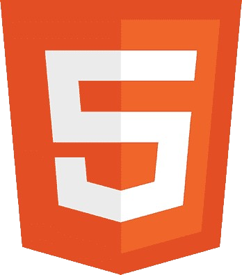
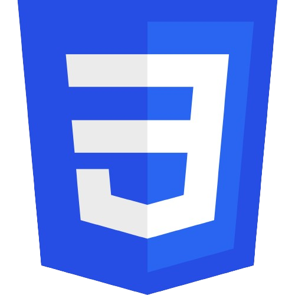
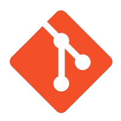
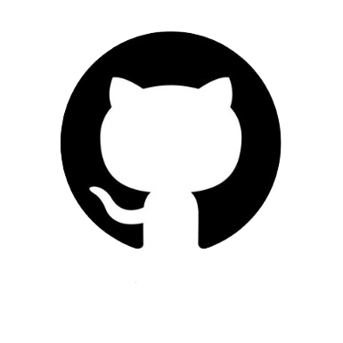

Prazer, eu sou
Tecnologia





Prazer, eu sou
Meu nome é Luiz André e sou apaixonado por tecnologia e jogos desde cedo. Em 2019, durante o ensino médio, tive meu primeiro contato com programação e fiquei fascinado ao descobrir como funcionam os bastidores dos sites e aplicativos que utilizamos diariamente. Inicialmente, comecei aprendendo HTML e CSS, mas logo me interessei mais pelo desenvolvimento backend. Hoje, estou focado em aprofundar meus conhecimentos nessa área, explorando linguagens como Python e buscando entender como sistemas robustos são construídos e otimizados.
Atualmente, estou cursando Análise e Desenvolvimento de Sistemas na Uninassau, onde tenho a oportunidade não apenas de consolidar meu aprendizado acadêmico, mas também de aplicar minhas habilidades em projetos práticos. Além dos estudos formais, dedico parte do meu tempo livre ao estudo autodidata de Python.